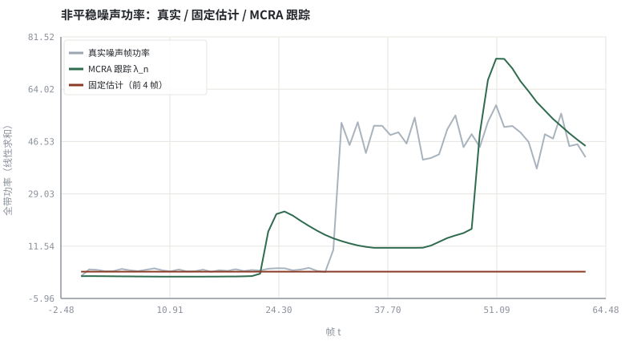
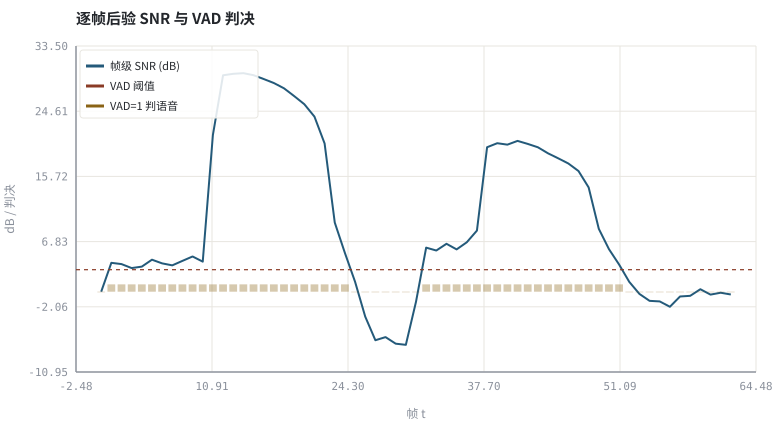

第 08 章VAD 与噪声功率谱估计（MCRA 思路）
没有干净参考，只能靠『噪声比语音更稳』这条统计假设把噪声谱跟出来。
本章位置：第 03 章 · 怎么算「变好了」：客观指标、尺度与主观听测 给评价指标，本章给出 ANS 的第一个估计量；第 12 章 · 谱减、过减因子与音乐噪声 用 λ_n 做谱减，第 13 章 · Wiener 滤波、先验 SNR 与 MMSE-STSA 把它升级为先验 SNR 与 MMSE 增益。
MCRA 是一个带滞回的监控指标：滑动窗最小值是 P99 基线的反向版本（取的是下包络），比值闸门是告警条件，α_n 是指数移动平均的半衰期。它不判断『有没有语音』，只判断『这一刻能不能安全地更新基线』。
- 能说明 VAD 与噪声功率谱估计为何互为前提。
- 能写出 MCRA 的时频平滑、最小值跟踪与条件更新三步。
- 能量化非平稳噪声下固定估计与跟踪估计的谱误差。
- 能运行实验，用检测率、谱误差与 segSNR 核对谱减效果。
§知识点地图
每个知识点都配了 1～2 个扩展学习链接；本章完整资源清单见 扩展学习。
| # | 知识点 | 扩展学习 | 状态 |
|---|---|---|---|
| 1 | 语音活动检测 VAD | Voice activity detection ↗ · ffmpeg silencedetect ↗ | 正文已覆盖 |
| 2 | 噪声功率谱 N[k,t] | ffmpeg afftdn ↗ · Microsoft DNS Challenge ↗ | 正文已覆盖 |
| 3 | 时频平滑 | Short-time Fourier transform ↗ · torchaudio ↗ | 正文已覆盖 |
| 4 | 最小值跟踪 | Voice activity detection ↗ · Wiener filter ↗ | 正文已覆盖 |
| 5 | 语音存在概率 | Voice activity detection ↗ · Wiener filter ↗ | 正文已覆盖 |
| 6 | MCRA 条件更新 | Voice activity detection ↗ · Wiener filter ↗ | 正文已覆盖 |
| 7 | 非平稳噪声阶跃 | ffmpeg afftdn ↗ · Microsoft DNS Challenge ↗ | 正文已覆盖 |
| 8 | 谱减与音乐噪声 | Spectral subtraction ↗ · ffmpeg afftdn ↗ | 正文已覆盖 |
§8.1两个互相依赖的估计量
Y[k,t] = S[k,t] + N[k,t] ，目标：从 |Y|² 里分离出 λ_n[k,t] = E{|N|²}
VAD 需要噪声底才能判断『这一帧是不是语音』，噪声估计又只该在『没有语音的帧』更新——这是典型的鸡生蛋问题。MCRA（Minima Controlled Recursive Averaging）的解法是不硬判 VAD，而是用功率谱的最小值统计间接找噪声底：语音出现时功率上冲，静音/语音间隙回落到噪声底，滑动窗最小值就把这个底抓出来。
| 步骤 | 递推式 / 操作 | 作用 |
|---|---|---|
| 频域平滑 | S_f[k,t] = Σ_{j=−1..1} b_j · |Y[k+j,t]|² | 抹掉谱峰的随机尖刺 |
| 时间平滑 | S[k,t] = α_s·S[k,t−1] + (1−α_s)·S_f[k,t] | 抑制帧间抖动 |
| 最小值跟踪 | S_min[k,t] = min{S[k,t−W..t]} | 得到噪声底的保守估计 |
| 条件更新 | 若 S/S_min < δ 则 λ_n ← α_n·λ_n + (1−α_n)·|Y|² | 只在疑似无语音时更新噪声 |
AEC 有参考信号 x，是监督式辨识；ANS 没有参考，只能靠平稳性假设。所以 第 03 章 · 怎么算「变好了」：客观指标、尺度与主观听测 强调：噪声估计错了，后面 第 12 章 · 谱减、过减因子与音乐噪声 谱减与 第 13 章 · Wiener 滤波、先验 SNR 与 MMSE-STSA 维纳增益一起错。
§8.2语音存在概率与更新闸门
S_r[k,t] = S[k,t] / S_min[k,t] ，p̂[k,t] ≈ 1 当 S_r > δ，否则按 S_r 插值
实践中不必显式算概率，直接用比值做闸门：S_r < δ（本实验 δ=2.2，约 3.4 dB）就认为该 bin 当前由噪声主导，允许更新 λ_n；否则冻结。α_n 决定跟踪速度：太大跟不上噪声阶跃，太小会把语音低谷误当噪声。
增益（谱减形式）：G[k,t] = max(G_floor, 1 − β·√λ_n[k,t] / |Y[k,t]|)
逐 bin 独立相减会留下孤立的随机谱峰，听感像鸟叫/水声。设增益下限 G_floor 并对相邻 bin 做平滑，是 第 12 章 · 谱减、过减因子与音乐噪声 要解决的第一件事。
§8.3实验怎么判『跟上噪声了』
- 谱误差：逐 bin 算 10log₁₀(λ̂_n/λ_n) 的绝对均值（dB），固定估计与 MCRA 对比。
- 跟踪曲线：噪声幅度在样本中段由 0.012 阶跃到 0.045，MCRA 曲线应跟着抬升。
- VAD 帧准确率：由后验 SNR 与阈值判决，与合成门控真值逐帧比对。
- segSNR：用两套噪声估计分别谱减，比较输出的分段 SNR。
§Python 实验
实验 8-1 · MCRA 噪声跟踪、VAD 判决与谱减对照
#!/usr/bin/env python3
# -*- coding: utf-8 -*-
"""合成带静音段的语音与非平稳噪声，实现最小值控制的递推平均，打印检测率、谱误差与 segSNR。
全部语音 / 噪声 / 房间冲激响应均为代码合成信号，仅用于教学演示机制与量级。
"""
from __future__ import annotations
import math
import pathlib
import random
import statistics
import sys
import time
_here = pathlib.Path(__file__).resolve()
for _p in _here.parents:
if (_p / "tools" / "dsp.py").exists():
sys.path.insert(0, str(_p / "tools"))
break
from dsp import (SAMPLE_RATE, fft, hann, stft, istft, magnitude_db, spectrum,
white_noise, tone, chirp, synthetic_speech, rir, convolve,
fft_convolve, delay, clip, normalize_peak, rms, rolling_rms,
smooth, db, energy_db, snr_db, erle_db, seg_snr_db,
scale_align, si_sdr_db, lufs_approx,
write_wav, read_wav, wav_info)
from chart import Chart, heatmap, BLUE, RED, GREEN, AMBER
FIG = _here.parents[1] / "fig"
AUDIO = _here.parents[1] / "audio"
FIG.mkdir(exist_ok=True)
AUDIO.mkdir(exist_ok=True)
random.seed(7)
# ---- 参数区 ----
N, NF, HOP = 8000, 256, 128
ALPHA_S, ALPHA_N = 0.50, 0.90 # 时间平滑 / 噪声更新平滑
WIN = 12 # 最小值跟踪窗（帧）
RATIO_TH = 2.2 # S/S_min 更新闸门
VAD_TH_DB = 3.0 # 帧级后验 SNR 阈值
SUB_FACTOR, FLOOR = 1.0, 0.15 # 谱减过减因子与增益下限
# ---- 计算与作图 ----
rng = random.Random(7)
base = synthetic_speech(rng, N)
gate = [1.0 if (0.18 * N <= i < 0.45 * N or 0.60 * N <= i < 0.90 * N) else 0.0
for i in range(N)]
speech = [base[i] * gate[i] for i in range(N)]
noise = [rng.gauss(0.0, 0.012 if i < N // 2 else 0.045) for i in range(N)]
noisy = [speech[i] + noise[i] for i in range(N)]
frames = stft(noisy, NF, HOP)
T = len(frames)
P = [[re[k] ** 2 + im[k] ** 2 for k in range(NF)] for re, im in frames]
nframes = stft(noise, NF, HOP)
Ntrue = [statistics.fmean(nr[k] ** 2 + ni[k] ** 2 for nr, ni in nframes) for k in range(NF)]
Nfix = [statistics.fmean(P[t][k] for t in range(min(4, T))) for k in range(NF)]
S = P[0][:]
Nhat = S[:]
hist, track, snr_t = [], [], []
for t in range(T):
sm = [0.25 * P[t][(k - 1) % NF] + 0.5 * P[t][k] + 0.25 * P[t][(k + 1) % NF]
for k in range(NF)]
S = [ALPHA_S * S[k] + (1 - ALPHA_S) * sm[k] for k in range(NF)]
hist.append(S[:])
if len(hist) > WIN:
hist.pop(0)
Smin = [min(h[k] for h in hist) for k in range(NF)]
for k in range(NF):
if S[k] / (Smin[k] + 1e-12) < RATIO_TH:
Nhat[k] = ALPHA_N * Nhat[k] + (1 - ALPHA_N) * P[t][k]
track.append(sum(Nhat))
snr_t.append(sum(P[t]) / (sum(Nhat) + 1e-9))
def spec_err(est, ref):
return statistics.fmean(abs(10 * math.log10((e + 1e-12) / (r + 1e-12)))
for e, r in zip(est, ref))
vad = [1 if 10 * math.log10(s + 1e-12) > VAD_TH_DB else 0 for s in snr_t]
truth = [1 if gate[min(t * HOP, N - 1)] > 0 else 0 for t in range(T)]
tp = sum(1 for a, b in zip(vad, truth) if a and b)
fp = sum(1 for a, b in zip(vad, truth) if a and not b)
fn = sum(1 for a, b in zip(vad, truth) if not a and b)
tn = sum(1 for a, b in zip(vad, truth) if not a and not b)
def suppress(noise_est):
out = []
for re, im in frames:
rr, ii = re[:], im[:]
for k in range(NF):
mag = math.hypot(re[k], im[k])
g = max(FLOOR, 1.0 - SUB_FACTOR * math.sqrt(noise_est[k]) / (mag + 1e-9))
rr[k] *= g
ii[k] *= g
out.append((rr, ii))
return istft(out, NF, HOP, N)
out_fix, out_mcra = suppress(Nfix), suppress(Nhat)
ntrack = [sum(nr[k] ** 2 + ni[k] ** 2 for k in range(NF)) for nr, ni in nframes]
c = Chart(FIG / "08-noise-track.svg", "非平稳噪声功率：真实 / 固定估计 / MCRA 跟踪",
xlabel="帧 t", ylabel="全带功率（线性求和）")
c.line(range(T), ntrack, "#9aa6b2", label="真实噪声帧功率", opacity=0.85)
c.line(range(T), track, GREEN, label="MCRA 跟踪 λ_n")
c.line(range(T), [sum(Nfix)] * T, RED, label="固定估计（前 4 帧）")
print("跟踪图:", c.save())
d = Chart(FIG / "08-vad.svg", "逐帧后验 SNR 与 VAD 判决", xlabel="帧 t", ylabel="dB / 判决")
d.line(range(T), [10 * math.log10(s + 1e-12) for s in snr_t], BLUE, label="帧级 SNR (dB)")
d.hline(VAD_TH_DB, RED, label="VAD 阈值")
d.bars(range(T), vad, AMBER, label="VAD=1 判语音", opacity=0.35)
print("VAD图:", d.save())
write_wav(AUDIO / "08-noisy.wav", normalize_peak(noisy))
write_wav(AUDIO / "08-fixed.wav", normalize_peak(out_fix))
write_wav(AUDIO / "08-mcra.wav", normalize_peak(out_mcra))
print("采样率=%d Hz STFT=%d/%d 帧数=%d 最小值窗=%d帧 噪声amp 0.012→0.045" %
(SAMPLE_RATE, NF, HOP, T, WIN))
print("噪声谱平均绝对误差: 固定=%.2f dB MCRA=%.2f dB" %
(spec_err(Nfix, Ntrue), spec_err(Nhat, Ntrue)))
print("VAD TP=%d FP=%d FN=%d TN=%d | 检测率=%.3f 虚警率=%.3f 帧准确率=%.3f" %
(tp, fp, fn, tn, tp / max(tp + fn, 1), fp / max(fp + tn, 1), (tp + tn) / T))
print("segSNR 带噪=%.2f 固定谱减=%.2f MCRA谱减=%.2f dB" %
(seg_snr_db(speech, noisy), seg_snr_db(speech, out_fix), seg_snr_db(speech, out_mcra)))操作：观察噪声幅度阶跃后 MCRA 曲线是否抬升；对照 VAD 判决与真值门控；试听两个谱减 WAV 的残余噪声。 预期与判读：固定估计停留在前 4 帧的低电平，MCRA 随阶跃跟踪到新噪声底，谱误差从 10.06 dB 降到 1.91 dB；但 MCRA 谱减的分段 SNR（7.93 dB）反而低于固定谱减（12.10 dB）——噪声谱估得准不等于输出质量高，过跟踪会连语音一起压掉。VAD 帧准确率 0.587、虚警率 0.630，说明阈值仍需按场景整定，可由 TP/FP/FN/TN 逐项复算。
改参数看趋势：把 ALPHA_N 调到 0.99，跟踪变慢但更稳；把 WIN 缩到 4 帧，最小值会被语音谷值污染。 文件位置：part1/08-noise-estimation/code/08-noise-estimation.py


08-noisy.wav
带非平稳噪声的语音（16 kHz / 16-bit 单声道，代码合成信号，不是真实录音）
08-fixed.wav
固定噪声估计谱减输出（16 kHz / 16-bit 单声道，代码合成信号，不是真实录音）
08-mcra.wav
MCRA 跟踪噪声谱减输出（16 kHz / 16-bit 单声道，代码合成信号，不是真实录音）
代码块右上角可一键复制；仓库里的 code/*.py 由 tools/extract_code.py 从这些代码块自动抽取。脚本只用标准库、固定 random.seed(7)，运行后写出 fig/*.svg 与 audio/*.wav；批量运行用 ./tools/run_python.sh。
§可选真机命令片段
以下命令不参与批量运行，需要本机自行安装对应工具。滤镜是否可用取决于本机 ffmpeg 版本与编译选项，请先用 ffmpeg -filters / ffmpeg -version 自查，并以 https://ffmpeg.org/ffmpeg-filters.html 与各自官方文档为准；本书不假定任何特定版本具备某项能力。
本机自查 VAD/降噪滤镜与官方文档
ffmpeg -hide_banner -filters | grep -E 'silencedetect|afftdn|arnndn|astats'说明：只做本机能力自查；滤镜参数与引入版本以 https://ffmpeg.org/ffmpeg-filters.html 及本机 ffmpeg -filters 输出为准，本书不假定任何特定版本。
§本章参考资料
按本章知识点挑选的精读资料；更多检索入口见 扩展学习。
§相关开源工程
下列工程仅作技术参照，版权与许可证归各自维护者所有。本书实验不依赖它们，也与之无从属关系。
§常见误区
- 用有声段直接平均当噪声谱，语音一停就过减。
- 最小值窗太短，语音音节间隙被当成噪声底。
- α_n 太大跟不上非平稳噪声，太小又把语音低谷吸进噪声估计。
- 谱减不设增益下限，产生音乐噪声。
§习题与思考
- 说明 VAD 与噪声估计为何互为前提，MCRA 用什么假设打破循环。
- 推导 α_n=0.9 时噪声估计的时间常数（帧数与毫秒）。
- 把噪声阶跃改成缓慢爬升，预测固定估计与 MCRA 的谱误差差距如何变化。
§扩展学习
继续检索
- Google Scholar：voice activity detection noise power estimation MCRA ↗
- arXiv：voice activity detection noise power estimation MCRA ↗
- GitHub：voice activity detection noise power estimation MCRA ↗
全书链接总表见 FFmpeg Filters 文档 ↗ 与 附录 A.7；滤镜是否可用请以本机 ffmpeg -filters 为准。
§延伸阅读与内链
- 第 12 章 · 谱减、过减因子与音乐噪声 谱减与音乐噪声；第 13 章 · Wiener 滤波、先验 SNR 与 MMSE-STSA 维纳/MMSE 与先验 SNR；第 09 章 · AEC 总体结构：参考信号、线性滤波与残余抑制 AEC 链路里 ANS 的位置。